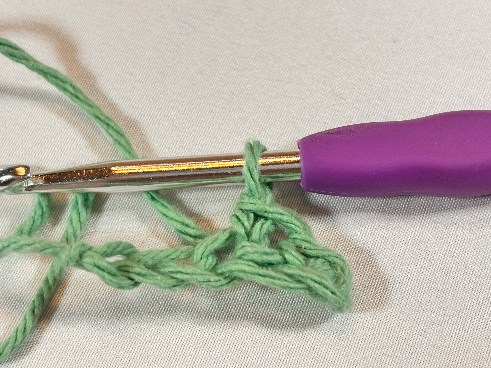
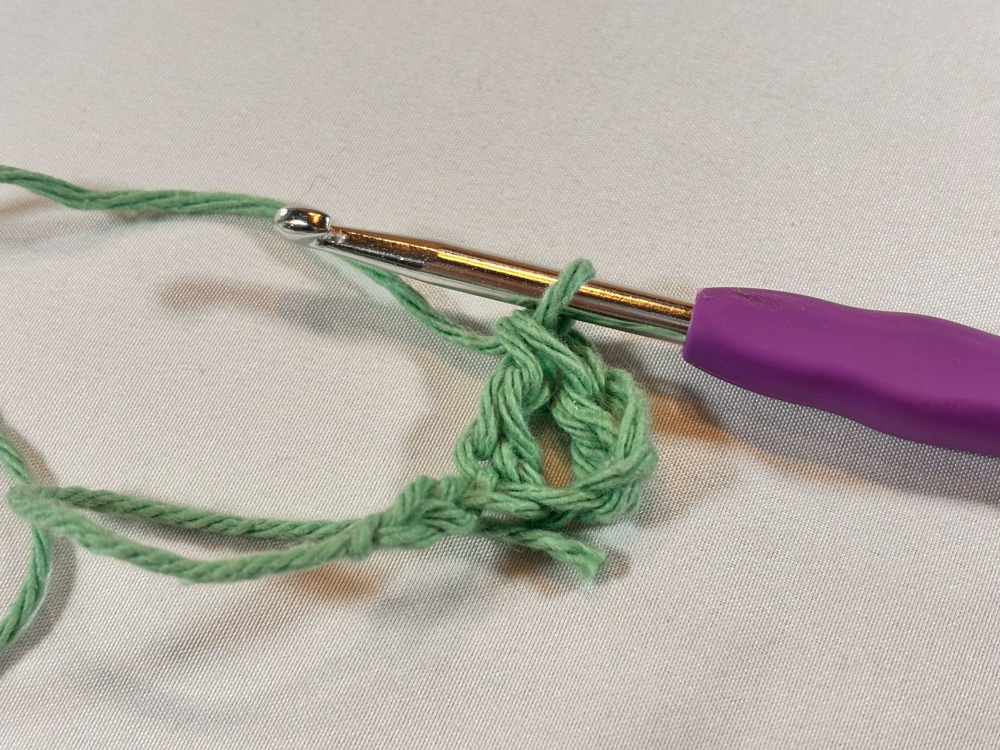

The Stitches
Here are the most common stitches for you to practice and master. They are used in most patterns and are a must to have in your skillset! We use different stitches to create different shapes and patterns in the work we make, so have some fun playing around with the different basic stitches.



Single Crochet
Double Crochet
Treble Crochet
Half-double Crochet
To single crochet, insert your hook into the stitch, yarn over, pull up, yarn over, and pull through both loops on the hook.
To double crochet, yarn over, insert your hook into the stitch, yarn over, pull up, yarn over, pull through the first two loops on the hook, yarn over, and pull through the remaining two loops on the hook.
To treble crochet, yarn over twice (there should be two loops on your hook), insert your hook into the stitch, yarn over, pull up, yarn over, pull through the first two loops on the hook, yarn over, pull through the next two loops on your hook, yarn over, and pull through the remaining two loops on the hook.
To half-double crochet, yarn over, insert your hook into the stitch, yarn over, pull up, yarn over, and pull through all three loops on the hook.